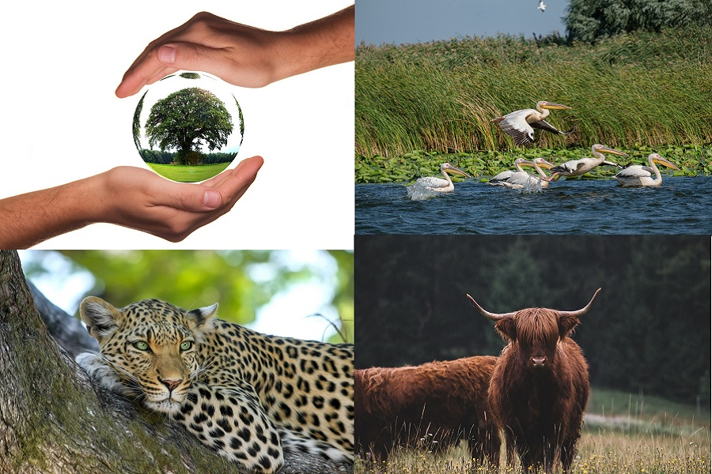
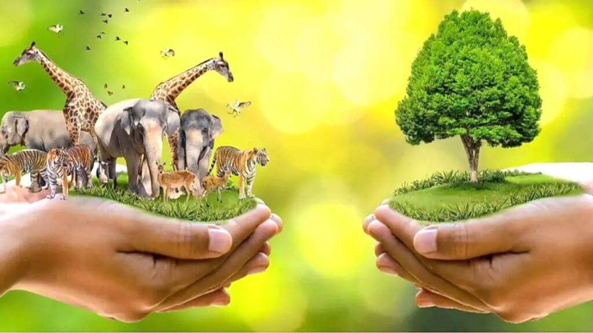
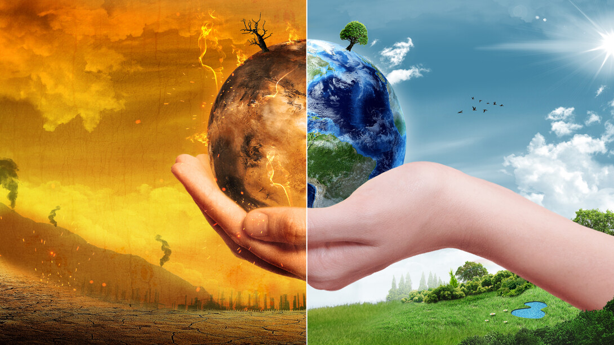
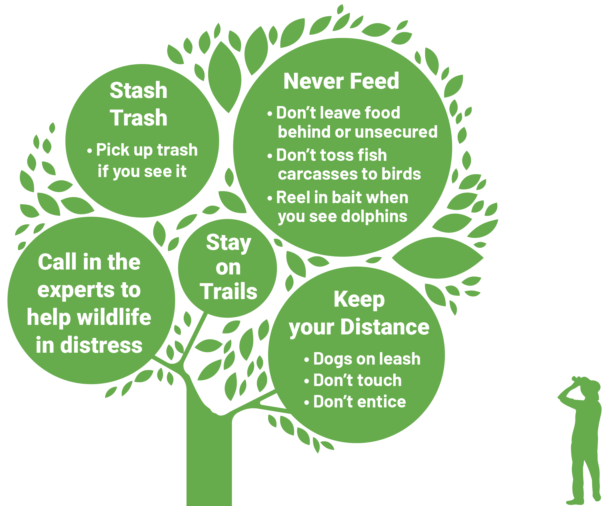
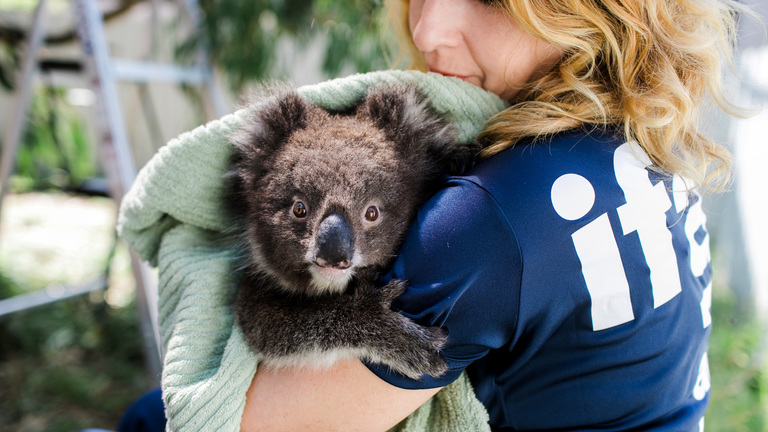
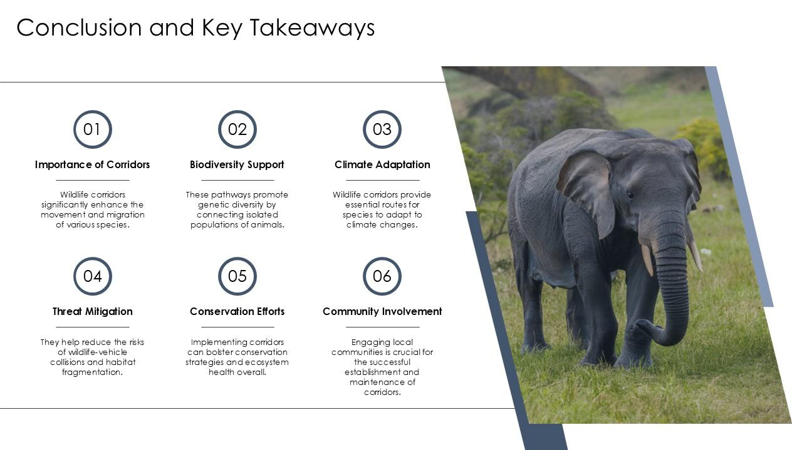

Wildlife Conservation
Introduction
Wildlife conservation is the protection of animals, plants, and their natural habitats to ensure that ecosystems remain balanced and healthy. It is closely linked to Sustainable Development Goal 15, which focuses on protecting life on land. Many species today face threats such as habitat destruction, poaching, pollution, and climate change. Conserving wildlife is therefore essential for preserving biodiversity and maintaining the natural systems that support life on Earth.
Why Wildlife Conservation Matters

Wildlife plays a major role in maintaining ecological balance. Animals help with pollination, seed dispersal, pest control, and nutrient cycling. When species disappear, ecosystems can become unstable and less resilient. Wildlife conservation matters because it protects these natural processes and helps ensure that future generations can continue to benefit from healthy forests, grasslands, wetlands, and other ecosystems.
Threats to Wildlife

One of the biggest threats to wildlife is habitat loss caused by deforestation, urban expansion, and agricultural development. Illegal hunting and poaching also put many species at risk. Pollution, including plastic waste and chemical contamination, harms both land and water ecosystems. In addition, climate change is altering weather patterns and habitats, making survival more difficult for many species. These threats highlight the urgent need for conservation efforts.
Conservation Methods

Wildlife can be protected through different conservation methods. These include creating national parks and wildlife reserves, restoring damaged habitats, enforcing laws against poaching, and promoting sustainable land use. Breeding programmes for endangered species and awareness campaigns also help strengthen conservation efforts. By combining environmental protection with education and law enforcement, conservation becomes more effective and sustainable.
How People Can Help

Individuals can support wildlife conservation in many ways. People can reduce waste, avoid products that harm endangered species, support eco-friendly organisations, and spread awareness about protecting biodiversity. Participating in tree planting, keeping natural areas clean, and respecting wildlife habitats also make a difference. Even small actions by communities can contribute to a larger positive impact on protecting life on land.
Conclusion

Wildlife conservation is essential for protecting biodiversity, maintaining ecological balance, and building a sustainable future. As human activities continue to affect natural habitats, stronger conservation efforts are needed more than ever. By protecting wildlife and supporting responsible environmental practices, we contribute directly to the goals of SDG 15 and help preserve the planet for future generations.